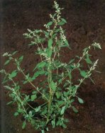
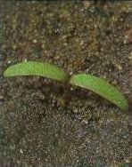
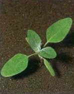

FEHÉR LIBATOP
CHENOPODIUM ALBUM L. (CHEAL)
ÉLETFORMA: T4
TERMÉS: Termése makk. Az ötfogú lepel a termést teljesen
magába zárja. A termésfal sugaras szerkezetű, nemezes-pikkelyes felületű. Ez a
felület különböző mértékben kopik le, ezért a termés felszíne rendszerint tarka
rajzolatú: sötétszürke alapon a sárgás, pikkelyes foltok sugaras vagy szabálytalan
elrendezésűek. A mag kerek, lapított, fekete, fényes. Átmérője 1,2-1,6 mm.
Ezermagtömege 0,8-1,0 g. Maghozama átlag 3000 körül van növényenként.
CSÍRANÖVÉNY: Sziklevelei hosszú oválisak, nyelesek,
húsosak, fonákuk vörösesibolya színű, a levelek felszíne ezüstösen lisztes. Az
első lomblevelek hosszú tojásdadok, ép szélűek vagy ritkán fogazottak, fonákuk
vörösesibolya színű, felszínük ezüstösen lisztes.
KIFEJLETT NÖVÉNY: Egyéves, 20-150 cm magas, szára
felálló, tompa élekkel barázdált, dúsan ágas, színe zöld vagy vöröses
lefutású. Levelei hosszú nyelűek, ék alakú vállból lándzsás tojásdadok,
egyenlőtlenül fogasak vagy majdnem ép szélűek, igen változatos alakúak. Virágzata
tömött gomolyos fürt. A virág színe zöld.
ELTERJEDÉSE: Kozmopolita. Jó vízgazdálkodású laza,
humuszos agyag és vályogtalajokat kedvel.
 |
 |